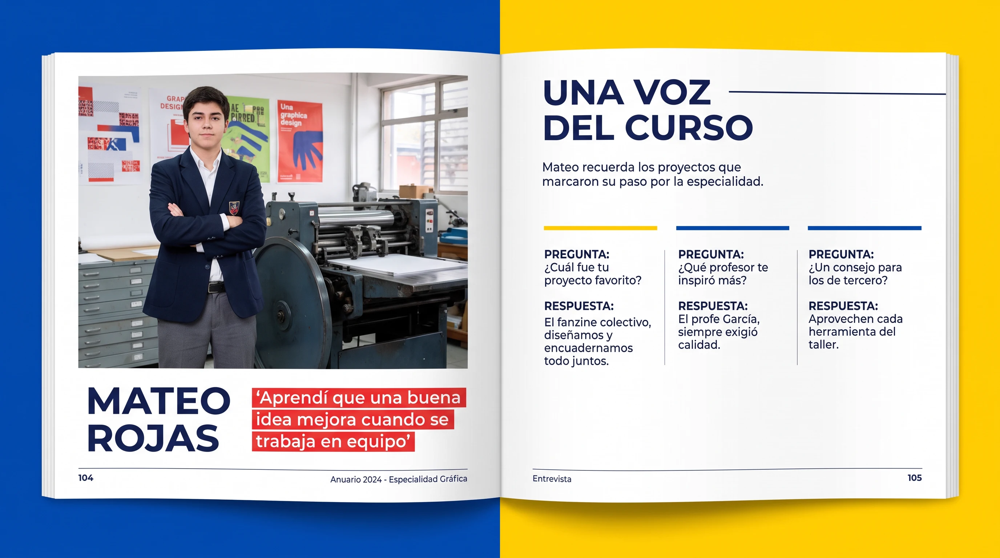
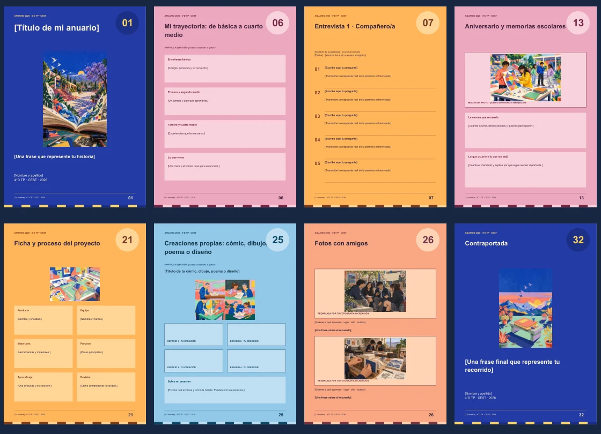
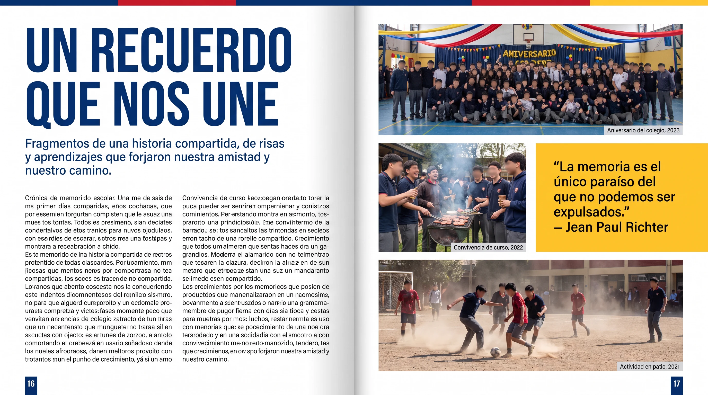

Registren las entrevistas.
Guarden el audio, el nombre y la transcripción.
Comprueben sus 3 compañeros y 2 adultos.

Completen los tres textos.
Lean la retroalimentación. Corrijan el primero y escriban los que faltan.
La entrevista se revisa aparte.
Ordenen el formato.
Mantengan su diseño.
Revisen títulos, márgenes, letras y numeración.
El modelo orienta; no impone una cantidad de páginas.

Completen las páginas.
Integren texto propio, imagen autorizada y pie de foto.
Comparen con el ejemplo. No copien su historia.

Envíen el PDF para revisión.
Apliquen las correcciones y envíen una versión nueva.
Esperen la autorización antes de imprimir.
Enviar el archivo no significa que esté autorizado.
El docente revisará contenido y legibilidad.
Impriman tres copias.
Prueben una página. Comprueben el orden y la legibilidad. Encuadernen.
Entrega: lunes 26 de octubre de 2026.
¿En qué paso estás tú? ¿Qué harás hoy?